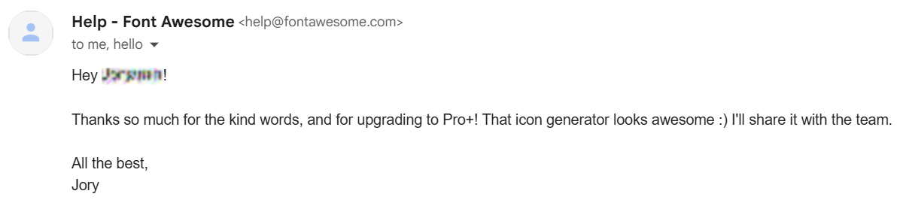

Welcome to “fa-random”: my
Coolors-style random
Font Awesome icon generator. Thanks for coming. This complete rewrite of the
original page has every single icon pack, family, and style.
Yes, I have a Pro+ plan.The name
“fa-random” comes from the icons’ CSS, where every class name starts with “fa-”, which stands for Font Awesome. There is no
“random” icon, but that’s what this tool provides.
This tool features the latest version of Font Awesome as of the date in the
top left.
The style of the current icon is the style that future icons will be displayed in. Keep this in mind when looking through your icon
history.
One of the ways you can move through your icon history is by swiping left and right.
If you don’t understand how to
use this tool, hover over things for slightly more information about what they do. There isn’t much more I can tell you.
This project uses
the font
“Pangram Sans Rounded” from Pangram Pangram Foundry.
Still have questions? Visit the
About,
Status, or
Contact pages.
HUGE thank you to
Font Awesome for responding so kindly to my email.
